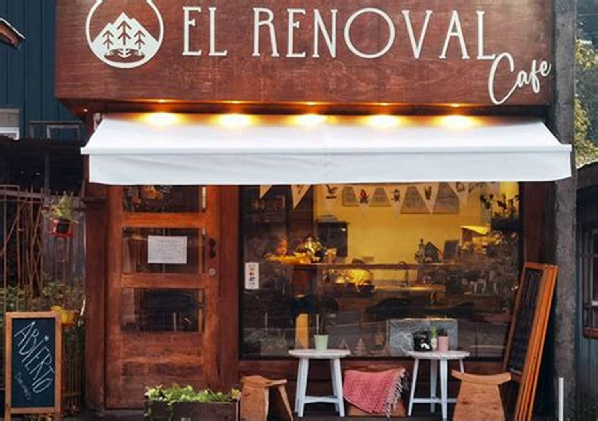
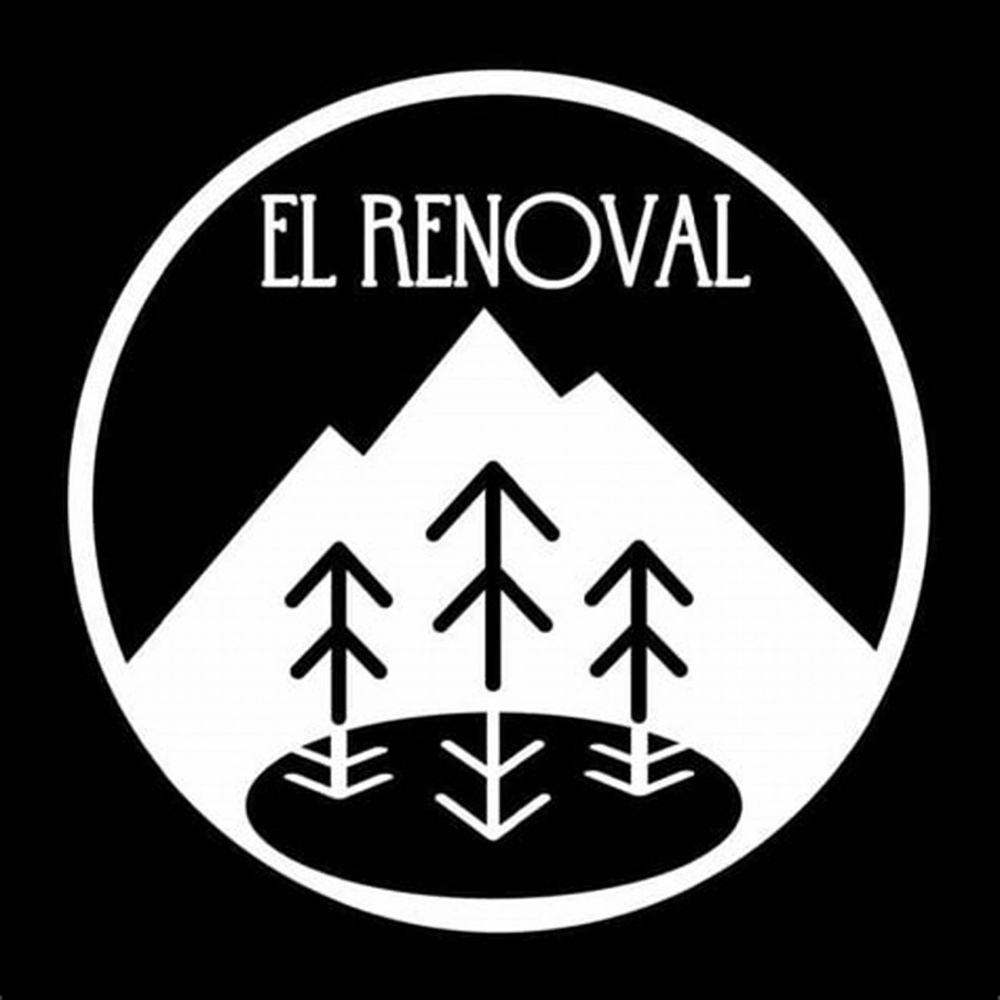
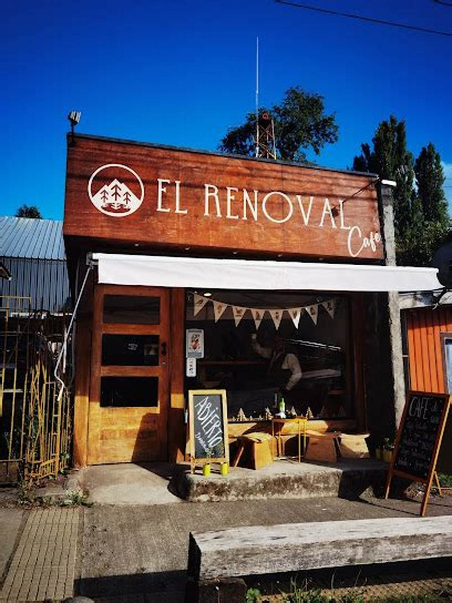
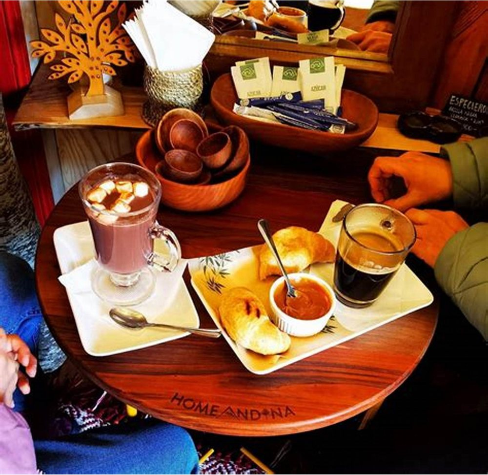
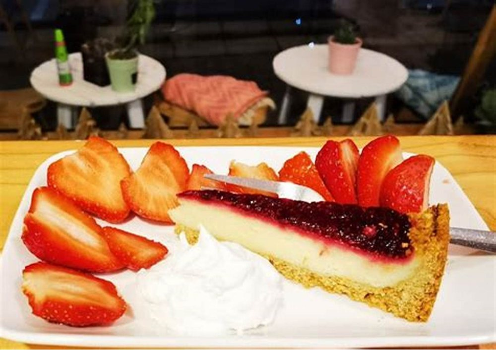

Café y restaurante · Curarrehue
Café de verdad,
a 5,0
Setenta y dos reseñas y ni una sola por debajo de cinco estrellas. En un pueblo de montaña eso no es suerte: es que alguien sabe hacer café. Falta que se sepa antes de llegar.
- nota en Google
- 5,0
- reseñas
- 72
- teléfono
- +56 9 6111 3538
Sin diccionario y sin vergüenza
Pedir café
sin diccionario
La carta de un café bueno está llena de palabras que no todo el mundo tiene por qué saber. Nadie debería quedarse con la duda ni pedir siempre lo mismo por no preguntar. Acá está cada uno traducido, con cuánta leche lleva.
-
Espresso
Café solo, poquito y concentrado.
Es la base de todos los demás. Un sorbo o dos. Fuerte de sabor, no de cantidad: tiene menos cafeína de lo que la gente cree.
-
Cortado
Un espresso con un chorrito de leche.
La leche está para bajarle el filo, no para cambiarle el sabor. Sigue sabiendo a café. El más pedido de Chile, y por algo.
-
Americano
Un espresso al que se le agrega agua caliente.
Ojo: lo que se agrega es agua, no leche. Queda más largo y más suave, pero es el mismo café. Para el que quiere una taza que dure.
-
Flat white
Leche cremosa, sin espuma gruesa.
Parecido al latte pero en taza más chica y con la leche más densa. Se sigue notando el café. El favorito del que ya probó todos.
-
Cappuccino
Leche con una capa gruesa de espuma encima.
La espuma es parte del trago, no un adorno: por eso se toma sin revolver. Suave y tibio.
-
Latte
Harta leche y un fondo de café.
El más suave de todos y el más grande. Si alguien dice «no me gusta el café pero quiero algo rico», éste es.
Dos atajos para no pensar
«Quiero uno fuerte»
Espresso, o cortado si le parece muy poco líquido.
«Uno suave, con harta leche»
Latte. Y si lo quiere un poco más cargado, flat white.
Las proporciones son las de referencia del oficio y varían de barra en barra. falta: confirmar cuáles trabajan y en qué tamaños — con eso la carta queda firmada por la casa.

La foto que ya tienen y vale por la carta entera
Se ve la cocina desde la vereda
Un café de pueblo compite contra la duda de si estará abierto y de si es para uno. Esta foto contesta las dos: el toldo levantado, las mesas puestas, la pizarra afuera y alguien trabajando adentro. Curarrehue tiene mucho paso de turista que decide en la vereda, en diez segundos, y esos diez segundos se ganan con la foto de la fachada y con el horario escrito.
Quién para acá y por qué
La pausa
del viaje
Curarrehue está en el camino a las termas y al paso fronterizo. Casi nadie viene sólo a tomar café: viene pasando, y para si algo lo hace parar. Un 5,0 escrito en la página es exactamente eso.
- Días y horario
- falta El que sale temprano de Pucón necesita saber si a las nueve ya hay café. Es el dato que más se busca y el que falta.
- Si hay enchufes
- falta Media clientela de un café de ruta viene con el teléfono en rojo. Decir que hay enchufes es gratis y trae gente.
- Si hay una mesa tranquila
- falta Para el que trabaja un rato o el que viene con un libro. Los dos se quedan más y consumen más.
- Si se puede pedir para llevar
- falta El que va apurado a las termas no se baja si cree que va a perder media hora.
- Dirección exacta
- falta El pueblo es chico, pero el que pasa maneja mirando el camino, no las fachadas.
Lo que esta página no dice: cuántos kilómetros ni cuántos minutos hay hasta las termas o hasta el paso. No los tengo medidos, y un número equivocado en internet le arruina el día a alguien que está manejando.
Café de verdad, a 40 km del paso
Curarrehue es la última parada antes de la frontera
Mientras tanto, se pregunta por teléfono
+56 9 6111 3538
Es el número publicado en su ficha de Google. Toda esta página existe para que deje de ser la única forma de saber a qué hora abren.
Todo esto es de ellos, empezando por el logo
Seis fotos de esta página son suyas, sacadas de su propia ficha y su Facebook. Sólo tres imágenes no lo son —el fondo de la portada, el aura y la cita, las tres de granos de café— y están declaradas en imagenes/FUENTES.txt.


falta: la carta escrita, y una foto del salón por dentro con luz de tarde

